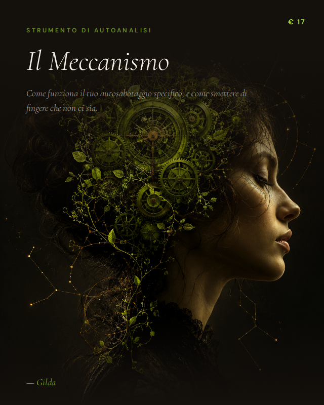
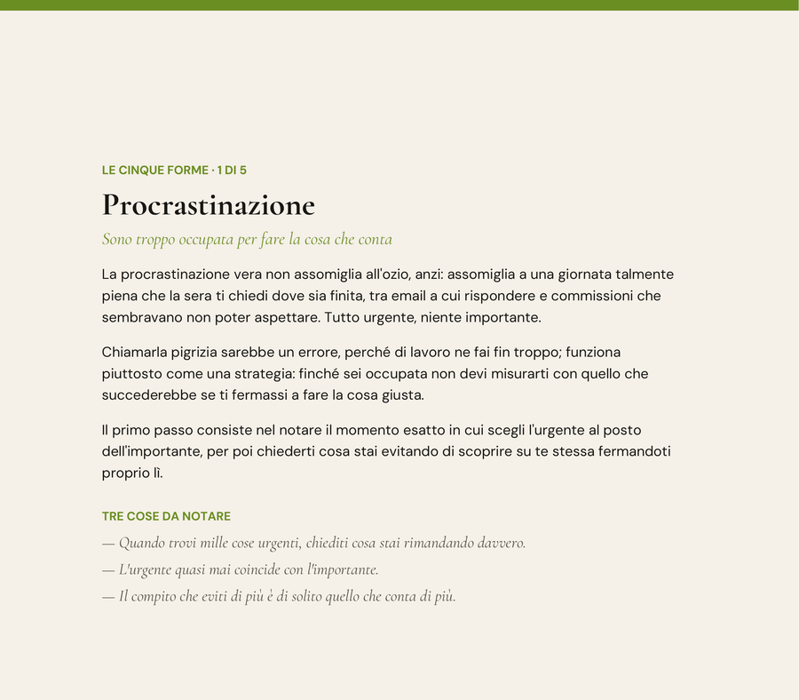
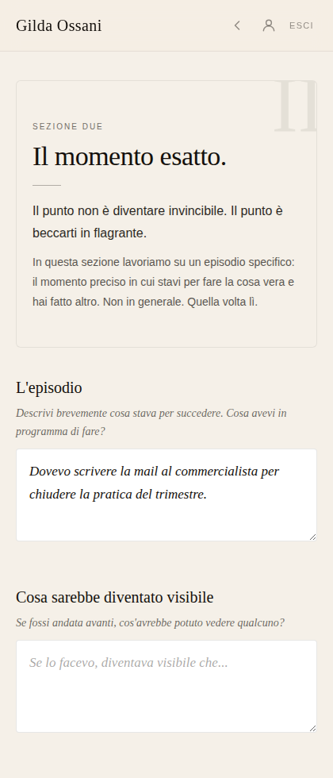
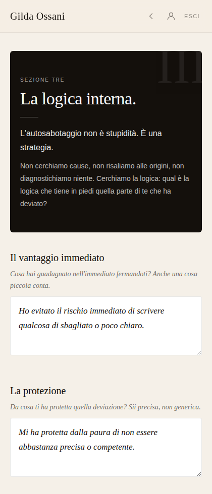
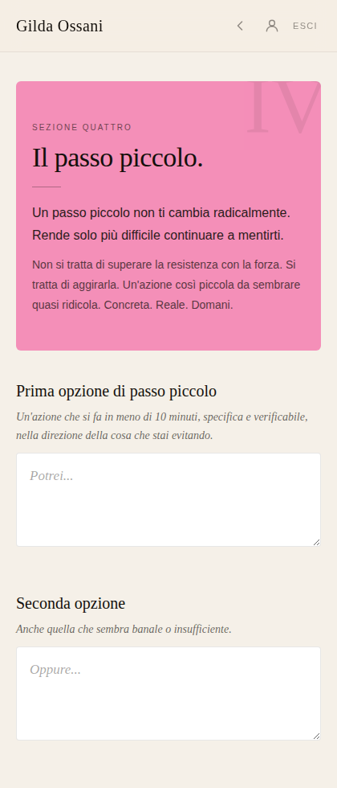

Non sempre è mancanza di volontà. A volte è un meccanismo preciso: si attiva davanti alla cosa che conta, ti fa deviare e ti offre una ragione credibile.
Il Meccanismo ti guida a riconoscere quella sequenza in un episodio reale, capire cosa ti permette di evitare e costruire una contromossa piccola e praticabile.
Web app interattiva + quaderno PDF di 33 pagine da stampare. Accesso senza scadenza.

Rispondi alle email prima di iniziare la cosa importante. Rivedi ancora un dettaglio prima di pubblicare. Aiuti qualcuno proprio quando dovresti occuparti di una scelta tua. Cerchi un'altra informazione, poi un altro parere. Decidi che non è il momento giusto.
Anche chi è molto occupata può restare ferma sulle cose che contano davvero.
Riconoscere il momento in cui una deviazione smette di essere utile e diventa il modo con cui eviti ciò che conta richiede attenzione, non autoaccusa. Nel frattempo la cosa importante resta ferma, rimandata ancora una volta, mentre il resto continua a tenerti occupata e ragionevole.
Nel percorso trovi una lettura delle cinque forme più comuni, senza un responso o un'etichetta fissa: possono mescolarsi e alternarsi e servono a riconoscere qualcosa, non a diagnosticarti.
Sono troppo occupata per fare la cosa che conta.
Tutto urgente, niente importante. La giornata si riempie e la cosa decisiva resta intatta.
Non è ancora pronto.
La revisione continua anche dopo aver smesso di migliorare davvero il lavoro.
Mi occupo di tutti, tranne che di me.
Aiutare resta una cosa bella. Diventa un meccanismo quando ti permette sistematicamente di rimandare ciò che riguarda te.
Ancora un'informazione, poi scelgo.
La prudenza raccoglie dati utili. Il meccanismo mantiene tutte le strade aperte per non esporsi a una decisione.
Ho capito tutto, non ho fatto niente.
Il pensiero sembra preparazione finché non diventa il posto in cui nessuna azione può andare storta, perché nessuna azione comincia.
Riconoscersi perfettamente in una forma non è necessario: conta arrivare a un episodio concreto, dove osservare che cosa è successo davvero.
Il percorso non ti chiede di descrivere genericamente "come sei". Funziona meglio quando scegli una volta precisa: stavi per fare qualcosa, hai deviato e ricordi ancora abbastanza bene il momento.
Riconosci come devii, come lo rendi presentabile e in quali situazioni si attiva.
Ricostruisci l'episodio: cosa stava per succedere, cosa hai fatto invece, cosa sentivi nel corpo e quale storia ti sei raccontata. Serve a beccarti in flagrante, non a diventare invincibile.
Guardi il vantaggio immediato della deviazione, ciò che ti ha permesso di controllare o evitare e ciò che dovresti affrontare senza quel meccanismo.
Costruisci tre opzioni sotto i dieci minuti, ne scegli una, stabilisci quando e dove farla e prepari una contromossa per la scusa che arriverà.
Qui puoi vedere una pagina del quaderno e tre schermate della web app. Le risposte inserite servono soltanto a mostrarti come si svolge il lavoro.

Dal quaderno — Procrastinazione

Web app — Il momento esatto

Web app — La logica interna

Web app — Il passo piccolo
Con l'acquisto ricevi entrambe le modalità: puoi scrivere nella web app, usare il quaderno stampato oppure passare dall'una all'altra.
Web app e quaderno PDF di 33 pagine, con accesso senza scadenza.
Acquisto sicuro su Ko-fi. Dopo l'acquisto ricevi le istruzioni per accedere al percorso.
Il Meccanismo è uno strumento di autoanalisi e scrittura guidata. Non è terapia, diagnosi o trattamento sanitario e non sostituisce un professionista.
No. Puoi lavorare a spezzoni. Nella web app le risposte vengono salvate automaticamente e puoi riprendere in seguito.
No. Le cinque forme e la checklist servono a iniziare a riconoscere il tuo modo di deviare. Il lavoro principale avviene poi su un episodio specifico.
Sì, in entrambi i modi. Puoi lavorare nella web app ed esportare le risposte in PDF, oppure stampare il quaderno vuoto di 33 pagine e scrivere a mano.
Puoi tornare al percorso e alle risposte salvate. Oggi la web app non conserva versioni datate separate né confronta automaticamente compilazioni diverse.
Ricevi le istruzioni per accedere alla web app e sbloccare Il Meccanismo nella tua libreria. Da lì puoi lavorare online oppure scaricare il quaderno da stampare.
La differenza è che avrai imparato a riconoscere prima la sequenza: la cosa che stavi per fare, la deviazione, la storia convincente, il vantaggio immediato. Saprai dove guardare e dove intervenire.
Web app interattiva + quaderno stampabile. Accesso senza scadenza.